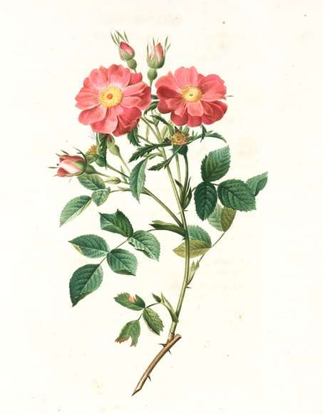
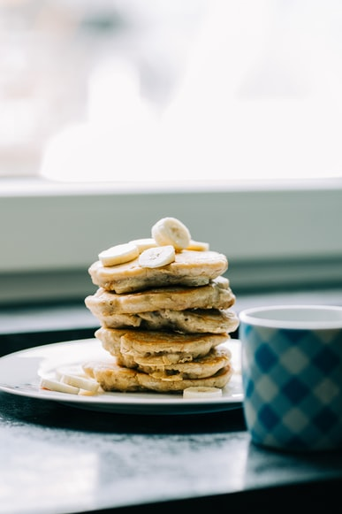

Article 1
September 01, 2020 by NewScientist

Flowering plants may have evolved 250 million years ago, more than 100 million years earlier than the oldest fossilised flowers so far found.Today, flowering plants – known as angiosperms – are the most diverse group of land plants. The oldest angiosperm fossils so far found are 135 million years old, and many researchers believe this is when the group originated. The fossil record suggests the group then became diverse by 130 million years ago.
“We wanted to have a model that only relies on fossils and doesn’t use genomic data or [evolutionary] assumptions,” says Silvestro. The analysis looked at the diversity of angiosperms today and how many species there were at different times. “It tries to draw a line between modern diversity and the time of the first ancestors of the families,” says Silvestro. The researchers found that their statistical analysis of the fossil record provides strong evidence that the oldest angiosperm may have appeared perhaps as early as 250 million years ago, during the very end of the Permian period – much earlier than the oldest known angiosperm fossil.
Article 2
September 27, 2020 by John Doe

Eating a healthy diet is not about strict limitations, staying unrealistically thin, or depriving yourself of the foods you love. Rather, it’s about feeling great, having more energy, improving your health, and boosting your mood. Healthy eating doesn’t have to be overly complicated. If you feel overwhelmed by all the conflicting nutrition and diet advice out there, you’re not alone. It seems that for every expert who tells you a certain food is good for you, you’ll find another saying exactly the opposite. The truth is that while some specific foods or nutrients have been shown to have a beneficial effect on mood, it’s your overall dietary pattern that is most important. The cornerstone of a healthy diet should be to replace processed food with real food whenever possible. Eating food that is as close as possible to the way nature made it can make a huge difference to the way you think, look, and feel.
While some extreme diets may suggest otherwise, we all need a balance of protein, fat, carbohydrates, fiber, vitamins, and minerals in our diets to sustain a healthy body. You don’t need to eliminate certain categories of food from your diet, but rather select the healthiest options from each category.Protein gives you the energy to get up and go—and keep going—while also supporting mood and cognitive function. Too much protein can be harmful to people with kidney disease, but the latest research suggests that many of us need more high-quality protein, especially as we age. That doesn’t mean you have to eat more animal products—a variety of plant-based sources of protein each day can ensure your body gets all the essential protein it needs.